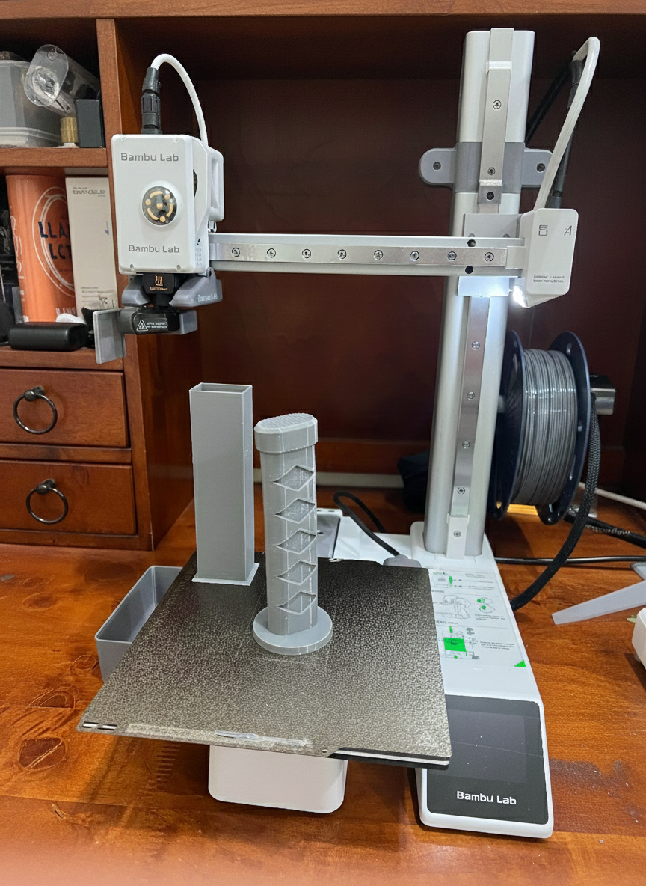
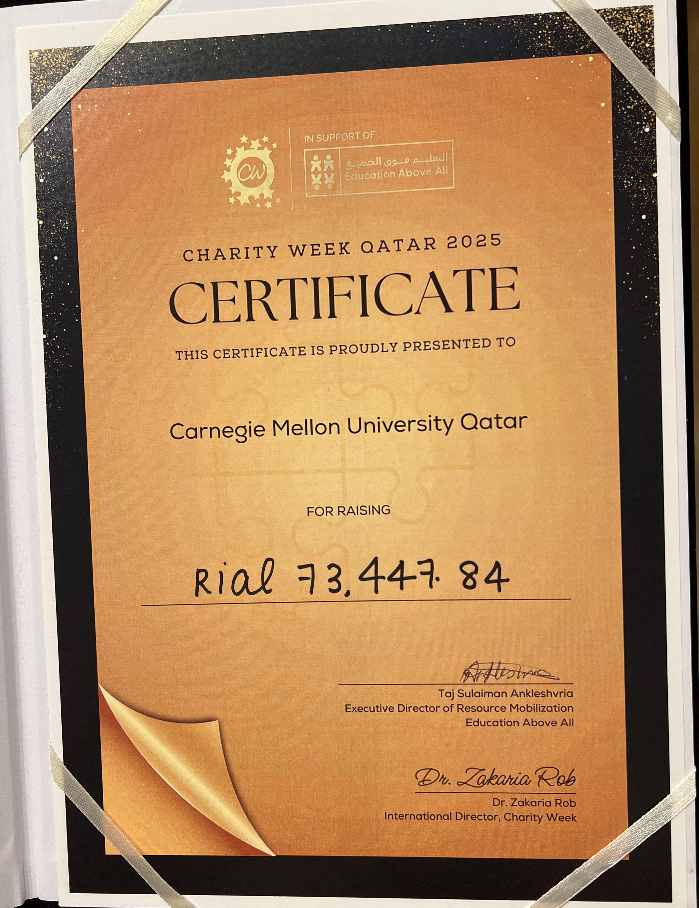
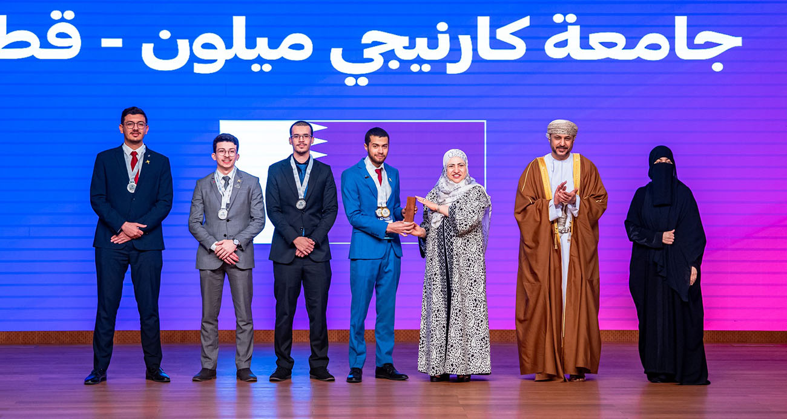

Information Systems • Data Strategy • Solutions Architecture
Mohamed Elosta
I’m an Information Systems student at
Carnegie Mellon University in Qatar exploring the
intersection of Data Science and Security. I build systems that
actually work for people, not just code that sits on a shelf.
Building a centralized system to manage 1,000+ corporate contacts.
Replacing Excel chaos with a real database that actually helps
Student Affairs make decisions.
Beyond Work
Horse Riding
Nothing like leading an 800kg beast to keep you humble and
focused.

3D Printing
One of the best purchases of my life. 100%
Need photos :)
Boxing
Helps me build confidence. Except when the person in front of me
has a gun...
Experience
Dec 2025 – Present
Internship
Lead Developer: Employer Engagement System
CMU-Q Student Affairs
They have a basic system that isn't meeting their needs. I'm
listening to what they actually want and building something
better:
• Redesigning their data architecture to centralize 1,000+
companies, contacts, and placements.
• Creating automated reports to identify engagement gaps and
hiring trends.
• Turning scattered data into actionable insights for
decision-making.
Tools & Skills
SQLPythonDatabase DesignData Analysis
May 2025 – Nov 2025
Internship
Cybersecurity Intern
Qatar Computing Research Institute (QCRI)
Worked on detecting cyberattacks on Industrial Control Systems
(ICS):
• Broke down real attacks (Stuxnet, Industroyer) and mapped them
to the MITRE ATT&CK framework
• Built a digital replica of a factory using PLCs to simulate how
these attacks actually work
• Programmed PLCs with Ladder Logic and Structured Text to create
realistic attack scenarios
• Generated attack data from the simulated factory to train ML
detection models
A biology professor had an issue regarding inconsistent
wound-healing assays. I interviewed him, conducted a literature
review, and identified the root cause: no standardized method for
creating consistent scratches in cell cultures.
• Proposed a custom 3D-printed insert to standardize the scratch
process.
• Designed 20+ prototypes in Fusion 360, iterating based on lab
feedback.
• Tested each iteration with the biology team to refine dimensions
and usability.
• Currently validating the final design and preparing research for
publication.
Tools & Skills
Fusion 3603D PrintingResin Printing
Feb 2025
Hardware/IoT
RevoScope LifeLine – Crisis Triage Automation
Developed a specialized medical device designed to accelerate
triage screening in crisis areas, reducing the time spent on
manual patient assessments during mass-casualty events.
• Led the 3D design and mechanical engineering of the device for
use in harsh environments.
• Built the IoT hardware framework to automate data collection and
speed up patient categorization.
• Pitched the idea to stakeholders, showing how the device reduces
screening time and human error.
Built a personal AI assistant to reduce email overload and enable
quick replies. The assistant manages Gmail and Calendar via
Telegram using voice and chat interactions.
• Integrated Fanar AI LLMs with Model Context Protocol (MCP) for
modularity and privacy.
• Developed agents for email summarizing, drafting
(English/Arabic), and scheduling.
• Enabled voice interaction for hands-free email and calendar
management.
Led a team to publish a review paper on functionalized carbon
nanotubes in a peer-reviewed journal. Led a multidisciplinary team
through the entire research and publication process.
• Sorted through 180+ research papers to identify key findings and
trends.
• Synthesized complex nanotechnology research into clear,
structured writing.
• Managed team responsibilities and timelines over an 8-month
project.
• Navigated peer review feedback and revised the paper for
publication.
Literature ReviewResearch SynthesisScientific WritingTeam CoordinationProject Management
Leadership
Charity Week – Head
August 2025 – October 2025
Led CMU-Q's Charity Week by coordinating 14 student clubs and a
30-member core team. Planned a week of fundraising events in
collaboration with Student Affairs, Facilities, and external
partners.
• Managed logistics, event planning, and club coordination across
the university.
• Synchronized schedules and requirements across 14 different
organizations.
• Executed fundraising campaigns that engaged the entire campus
community.
Raised QAR 74,000 in one week—the highest total among
All institutions in Qatar.
Team LeadershipEvent PlanningStakeholder ManagementFundraising

Arabic Debate Team – Vice President
October 2024 – Present
Represented CMUQ in national, regional, and international Arabic
debate championships. Organized campus debate events and mentored
new debaters through their first competitions.
• Competed against 145 debaters from 18 countries at the Asian
Championship.
• Advanced through group stage rounds to reach the grand finale.
• Developed rapid analytical thinking and persuasive communication
under pressure.
Public SpeakingCritical ThinkingPersuasionMentorship

Blog
Life
Why I Don't Use LinkedIn
December 2025
The short answer? It's not for me.
First, it feels fake. People post random updates just to look good,
and it often comes off as desperate. Second, there's the Microsoft
factor. I'm not interested in handing over all my professional data
for free, or worse, paying for "Premium" just to get exposure.
Third, it's just another form of social media, and I've already quit
that. Every other day, "LinkedIn Warriors" hop onto GPT, ask it to
write a post about xyz, and hit share. Like bro, why?
I know I'm putting myself at a disadvantage by not having an updated
account, but I'm okay with that risk. That's why I built this
website. It's a platform where I actually own my work, thoughts, and
ideas.
Is it hypocritical to say I don't want to give my info to a company
while putting it on the open web? Maybe. But here, I have control.
I'm not pressured to make fake posts or share things I don't stand
with. This feels real. This is actually me.
Leadership
The Underdogs: 2nd Place in Asia (and 1st Place in Go-Karting)
November 2025
I always push myself to do new things. Whenever I get that feeling
of discomfort, that weird emptiness in my stomach, I know I have to
follow through. For me, that feeling is Debate.
You get 20 minutes to prepare for a one-hour debate. 20 minutes to
defend a position you might personally disagree with. 20 minutes to
organize the ideas of an entire team. It's terrifying. So when I
heard about the
Asian Arabic Debating Championship in Oman, I said,
"Count me in."
The trip started with me sleeping on my teammates' couch because my
assigned roommate didn't answer the door, but things picked up fast.
Over the first two days, we won 4 out of 5 rounds and qualified for
the quarterfinals. We thought, "Good run, let's call it a day." Then
we hit the semifinals. Then, at dinner, it was announced:
Carnegie Mellon University has made it to the Finals.
The final was in a Ministry building with Omani ministers and the
Qatari Ambassador present. I was the third speaker, and I'll be
honest, I was scared. If you checked the rest of my site, you know
the ending: We lost.
It sounds like a sad ending, but looking back, we took
2nd Place in all of Asia. A team from an American
university stood on that stage in a regional Arabic championship and
took the silver. Shoutout to my teammates Mohamed Elazani and Ali
Shaar. Couldn't have done it without them. And huge thanks to our
coach Diram and his friend Mohamed for grinding through all those
practice rounds with us.
Best moment: The night before the final, a group of
debaters and judges wanted to go go-karting late at night. Most
people would have stayed in to sleep, but I said, "Hell yeah." I won
first place in the race. At least I won something that week. :)
CMU-Q has around 400 students. Somehow, we raised over 73,000 QAR in
a single week.
To put that in perspective, we raised more than every other QF
university combined. We even beat Qatar University, which has 75x
more students than us. Alhamdulillah.
This was my first time leading Charity Week, and since the last one
was before COVID, there was no "how-to" guide left behind. I had to
start from scratch. I reached out to every club in CMU-Q. Some
weren't interested, but 14 of them stepped up.
It was a massive headache trying to sync facilities, student
affairs, and 14 different clubs, but we made it work by making a
club representative part of our core team.
I have to thank Dina Al-Abdi (Program Director of
Student Engagement) for being our advisor. She rescued us every time
we hit a wall. Also, a huge shoutout to the Facilities, Events, and
IT teams for handling all our last-second changes.
To MSA, Chicken Legs, Arts & Craft, QSA, Knit & Knot, Bridges of
Hope, Innovation Studio, Student Majlis, and the Volleyball Club: we
did it. The best part was watching
Chicken Legs Club raise 30k in under two hours.
To everyone who donated or just showed up, every riyal mattered. We
proved that CMU-Q shows up when it counts.
People often ask, "What is Information Systems?" Even I had to
figure it out when I first joined the program at
Carnegie Mellon. Now, I'm clear on the mission: We
aren't "watered-down" Computer Science, and we aren't just IT. We
live at the intersection of Technology, People, and Business.
An IS major identifies a business challenge, finds a technical
solution, and designs it so people actually want to use it. We don't
just build algorithms for the sake of code that sits on a shelf. We
listen, evaluate, and build systems that solve real-world problems.
Some think this is a "joke" major because it isn't math-heavy, but I
don't care. I may not be the world's fastest programmer, but I am a
leader who knows how to use technology to move the needle. That's
why AI won't replace me. I'm not just a coder. I'm a bridge-builder.
Get in Touch
Feel free to reach out if you want to talk about projects,
collaboration, or just chat.